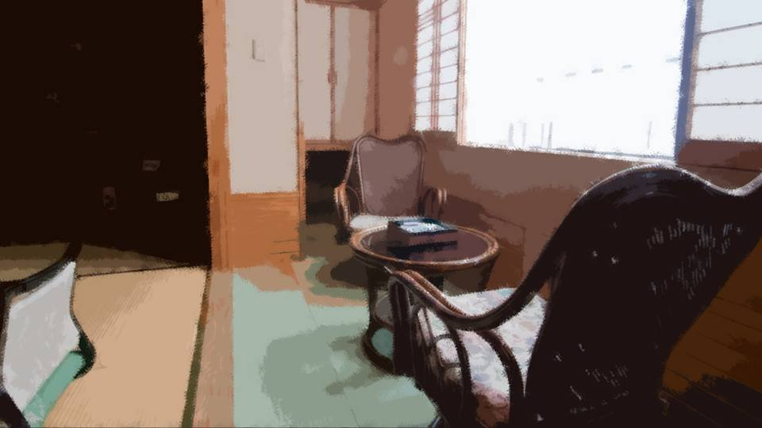
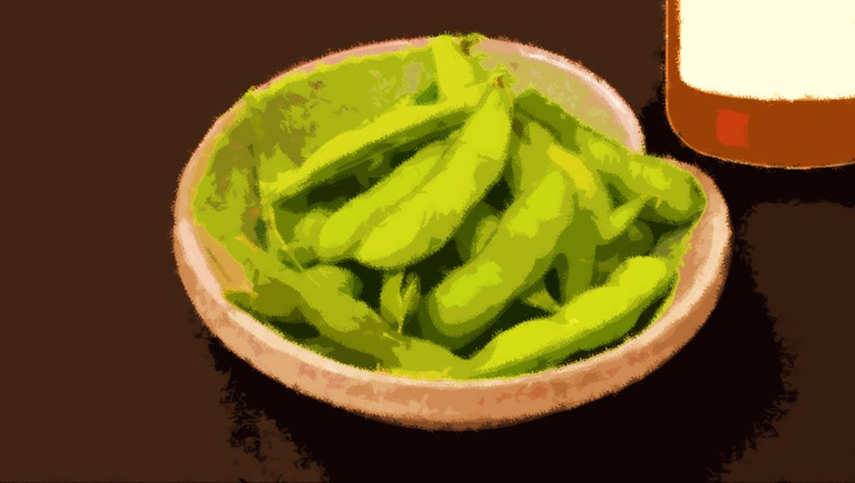
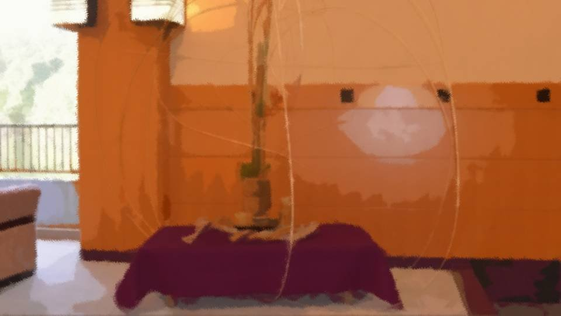

Sisters 1


"Oh, I can see the sea!"
"So it is!"
"About 10 more minutes to the inn. Good thing the weather's nice."
"So it is!"
"About 10 more minutes to the inn. Good thing the weather's nice."
At the wheel was Dad, and in the passenger seat, Mom.
In the back seat, me and Haruka.
Today, the four of us were off on an overnight trip.
In the back seat, me and Haruka.
Today, the four of us were off on an overnight trip.

"Mom's souvenir... what should I get her..."
"For Obasan, maybe cosmetics or something like that?"
"For Obasan, maybe cosmetics or something like that?"
"No, no, my mom is actually pretty particular.
She's not happy unless it's something she picked out herself and likes."
"Then maybe hot-spring manju or something... Oh, we're near the sea, so maybe seafood would be good too?"
"Then maybe hot-spring manju or something... Oh, we're near the sea, so maybe seafood would be good too?"
Today's trip was a present from Haruka's mom.
It was Golden Week, after all, so she'd suggested a trip as a blood-related family.
Dad and Mom had tried to politely decline, but Obasan had already made the reservation before hearing their answer.
It was Golden Week, after all, so she'd suggested a trip as a blood-related family.
Dad and Mom had tried to politely decline, but Obasan had already made the reservation before hearing their answer.
What's more, it was the finest room at a hot-spring inn, far too expensive to call a present...
Well, it's a crass thing to say, but Obasan seems to be a company president, so maybe that kind of thing weighs less on her than on ordinary folks.
Well, it's a crass thing to say, but Obasan seems to be a company president, so maybe that kind of thing weighs less on her than on ordinary folks.
"By the way, where's Goto gone?"
"An amusement park in Megasawa, she said. A theme park that just opened last year, supposedly with the biggest grounds in Japan."
"Wow... sounds fun, but it must be really crowded this time of year."
"Well, same goes for us."
"An amusement park in Megasawa, she said. A theme park that just opened last year, supposedly with the biggest grounds in Japan."
"Wow... sounds fun, but it must be really crowded this time of year."
"Well, same goes for us."
Today, Goto wasn't with us.
When she heard about our trip, she threw a fit about wanting to come along, but then the Goto family decided to take a trip of their own, and it all worked out.
When she heard about our trip, she threw a fit about wanting to come along, but then the Goto family decided to take a trip of their own, and it all worked out.
"Still, is it really okay to build a theme park that big in a regional city like Megasawa?"
"Well, if there's one thing Megasawa has, it's a stupid amount of land."
"Well, if there's one thing Megasawa has, it's a stupid amount of land."
"Would anyone actually come all the way to Megasawa to have fun?
Like, from Tokyo and places?"
"Who knows. Only whoever built it knows what they're thinking. Well, we'll just take it easy and soak in the hot springs. I hope the hot springs fix this eye too..."
"Who knows. Only whoever built it knows what they're thinking. Well, we'll just take it easy and soak in the hot springs. I hope the hot springs fix this eye too..."
"So that eye's still bothering you?"
"Well, obviously, right? Out of nowhere, just one eye turns green, like Chiga-nee's or Kana's!"
"Well, obviously, right? Out of nowhere, just one eye turns green, like Chiga-nee's or Kana's!"
"But the hospital didn't find anything wrong, right?"
"Yeah. They told me an injury can change your eye color, though."
"Did you get hurt like that?"
"Yeah. They told me an injury can change your eye color, though."
"Did you get hurt like that?"

"Remember, Kotaro-san pressed my head against the cave ceiling, right?
If that's the cause, I guess it's not impossible..."
"Hmm, I see... But it's a pretty green, so I think it's nice."
"Hey now... put yourself in my shoes. It's like my hair suddenly went blond and stood on end, right?"
"What are you, from some warrior race...?"
"Hmm, I see... But it's a pretty green, so I think it's nice."
"Hey now... put yourself in my shoes. It's like my hair suddenly went blond and stood on end, right?"
"What are you, from some warrior race...?"
Ever since we went to Arata, Haruka's left eye had turned green, like Chiga-nee's and the others'.
The hospital couldn't find the cause either, and Haruka found her own eye creepy.
But the people around her didn't make much of it. They figured it was just one of those things that happen when you're alive.
The hospital couldn't find the cause either, and Haruka found her own eye creepy.
But the people around her didn't make much of it. They figured it was just one of those things that happen when you're alive.

―We arrived at the inn by the sea.
It being Golden Week, the place was bustling with crowds.
The inn had two buildings, and with the one that seemed to be for guests, you couldn't even tell at a glance how many floors it had.
It being Golden Week, the place was bustling with crowds.
The inn had two buildings, and with the one that seemed to be for guests, you couldn't even tell at a glance how many floors it had.
And the big sea, reflecting the clear blue of the May sky for all it was worth.
We'd probably be able to take in this whole view from our room, too.
Actually... this clearly isn't an inn ordinary folks get anywhere near...
We'd probably be able to take in this whole view from our room, too.
Actually... this clearly isn't an inn ordinary folks get anywhere near...

"Haruka, you okay?"
"Yeah, I'm fine now..."
Haruka had been studying her eye on her phone the whole time since we talked about it.
Maybe that was why she'd gotten completely carsick.
"Yeah, I'm fine now..."
Haruka had been studying her eye on her phone the whole time since we talked about it.
Maybe that was why she'd gotten completely carsick.
"Man, this inn is amazing...
Nobody's ever taken me anywhere like this..."
"Yeah... I feel bad, somehow."
"Yeah... I feel bad, somehow."

"No, no, instead of feeling bad, just enjoy it all you can. I think my mom will be happier that way!"
Dad and Mom were both gazing up at the towering building, dumbfounded.
Apparently the inn was even fancier than they'd imagined.
Dad and Mom were both gazing up at the towering building, dumbfounded.
Apparently the inn was even fancier than they'd imagined.

Our room had its own private family bath, and it was two rooms at that.
It had the kind of elegance that deserved to be called the best room.
It had the kind of elegance that deserved to be called the best room.

"So, what should we do now?
Um... Dad, Mom..."

"Oh, calling me 'Mom'... You can keep things the way they've always been, okay?"

"Right, right, same as always."
"Ha, ha ha ha... yeah, you're right!
Oh! I'm gonna go explore the inn by myself for a bit!"
Haruka hurried out of the room.
It seemed she felt a little out of place after all.
It seemed she felt a little out of place after all.
"Haruka-chan is uncomfortable with it after all, isn't she..."
"Well, that's just for now. She'll get used to it soon enough."
"Well, that's just for now. She'll get used to it soon enough."

Dad said that, then picked up the receiver of the room phone.
"Ah, hello? Two beers, please.

You guys want anything?"
Dad apparently meant to start his evening drink right away.
Dad apparently meant to start his evening drink right away.
"I'm good for now."
"I'll... just have a little of Dad's."
It was 2 o'clock in the afternoon.
We'd just had lunch, and the expensive-looking tea in the room was plenty for me.
"I'll... just have a little of Dad's."
It was 2 o'clock in the afternoon.
We'd just had lunch, and the expensive-looking tea in the room was plenty for me.
"Hey... I heard a little about what happened in Megasawa..."
When I said that, the two of them looked startled.
When I said that, the two of them looked startled.

"Right... we should tell you properly."
The two of them sat down facing me.
The two of them sat down facing me.

Haruka's adoption, and how it came about―
Haruka's dad's accident―
What happened in Megasawa City―
They told me all of it, without trying to hide a thing.
Haruka's dad's accident―
What happened in Megasawa City―
They told me all of it, without trying to hide a thing.
"I see... So everything turned out for the best."
Haruka's mom had asked for a murder, and the two of them had been torn right up until the last moment. Hearing that, I was naturally a little thrown.
But the two of them had avoided a tragedy.
That was enough.
Haruka's mom had asked for a murder, and the two of them had been torn right up until the last moment. Hearing that, I was naturally a little thrown.
But the two of them had avoided a tragedy.
That was enough.
"Pardon me."
There was a knock at the door, and an inn attendant came in.
There was a knock at the door, and an inn attendant came in.
"Thank you very much for honoring our inn with your visit today."
The attendant bowed reverently, with her fingertips to the floor.
The attendant bowed reverently, with her fingertips to the floor.
"Here is what you ordered."

Dad's beer arrived, and with it, complimentary edamame with big, plump beans.
Once the attendant left the room, Dad silently poured his own beer.
"Back then, if you hadn't said you were coming along, there's no telling what would have happened.
I could see Mifuyu was suffering, and I really wanted to do something for her."
This time, it was Mom's glass that Dad filled with beer.
I can understand a little of how Mom felt.
This time, it was Mom's glass that Dad filled with beer.
I can understand a little of how Mom felt.
If Haruka ever asked me to do something like that...
Even supposing Dad and Mom had committed murder 10 years ago, I don't think I could truly despise them or feel ashamed of them.
Even supposing Dad and Mom had committed murder 10 years ago, I don't think I could truly despise them or feel ashamed of them.
But happiness piled up on top of that kind of misfortune is surely a fragile thing.
A second or a third incident could even have happened.
I'm truly glad these two are my parents.
A second or a third incident could even have happened.
I'm truly glad these two are my parents.
"I'm going to go look for Haruka.
She got hurt protecting me 10 years ago, and I haven't even thanked her or apologized yet."
Leaving Haruka alone too much would also go against what Haruka's mom wanted.
Leaving Haruka alone too much would also go against what Haruka's mom wanted.

―I left the room and went around checking places Haruka might be.
Still, it really was a huge, magnificent inn.
One wrong turn and I'd probably get lost.
Still, it really was a huge, magnificent inn.
One wrong turn and I'd probably get lost.
"Actually... maybe I've...
already gotten lost..."
After getting on and off the elevator over and over, I wasn't even sure anymore which floor our room was on.
On top of that, I'd left my phone in the room.
Maybe the only thing for it now is to go to the front desk and ask. Embarrassing as it is...
After getting on and off the elevator over and over, I wasn't even sure anymore which floor our room was on.
On top of that, I'd left my phone in the room.
Maybe the only thing for it now is to go to the front desk and ask. Embarrassing as it is...

I went down to the first floor, where the front desk was.
At the front desk was someone I recognized...
At the front desk was someone I recognized...

"Excuse me, I'm Niimura... no, Kogori, but which room was mine again...?"
It was unmistakably Haruka.
From what I could hear, Haruka had gotten lost too.
It was unmistakably Haruka.
From what I could hear, Haruka had gotten lost too.
"Haruka, you're lost too?"
When I spoke to her, Haruka looked over at me, startled and embarrassed at the same time.
"Na-na-Natsumi!?
Ah, no, well, yeah... ha ha ha."
Haruka was scratching her head, red-faced.
Haruka was scratching her head, red-faced.
"So, what about you?"
"Me? Um, well, I was out looking for you, and..."
"Me? Um, well, I was out looking for you, and..."
"Ah-hah. I know what's up! You got lost too, didn't you?"
"Huh!? Oh, yeah, that's... right..."
We laughed together a little.
"Huh!? Oh, yeah, that's... right..."
We laughed together a little.
"Natsumi, wanna take a little walk outside? The sea's close, and the weather's nice."
We got a note with our room number and left the inn.

"Hello, Mom? I'm with Haruka now.
We're going to take a little walk outside.
Thanks, Haruka."
Haruka lent me her phone so I could call Mom.
Haruka making the call to Mom herself was something I still felt a little hesitant to ask.
Haruka lent me her phone so I could call Mom.
Haruka making the call to Mom herself was something I still felt a little hesitant to ask.

We went down the stairs from the parking lot toward the sea and looked out over the water below from the top of a cliff.
There was a little wind, and the sea was covered with a cloth of waves.
The warm season had come, and the sea breeze felt amazing.
There was a little wind, and the sea was covered with a cloth of waves.
The warm season had come, and the sea breeze felt amazing.

"Both of us getting lost at the same time... we really are sisters."
Haruka looked out at the sea with a smile.
Haruka looked out at the sea with a smile.
Her profile―I gazed at Haruka's left eye.
An eye every bit as clear as the sea below.
That green was like the deep sea, like the high sky, and like the budding forests of May.
An eye every bit as clear as the sea below.
That green was like the deep sea, like the high sky, and like the budding forests of May.
"Even sisters hardly ever get lost at the same time."
"Then we're more than sisters!"
We're sisters, and best friends.
No, we're a rare pair who were best friends before we were ever sisters.
"Then we're more than sisters!"
We're sisters, and best friends.
No, we're a rare pair who were best friends before we were ever sisters.
I looked at Haruka's profile once more.
This person is my older sister. It doesn't feel real at all...
This person is my older sister. It doesn't feel real at all...
"Earlier, I heard about how you saved me 10 years ago.
Thank you for back then.
And... I'm sorry."
"Ha-hahaha! I don't even remember that stuff myself!
It's me and you, right? Don't be such a stranger!"
Haruka laughed out loud, hands on her hips.
Haruka laughed out loud, hands on her hips.
"Never mind something that long ago, you got hurt shielding me just the other day, didn't you?
That's what I really feel bad about..."
"Ha-hahaha! It's me and you! Don't be such a stranger!"
I laughed out loud, imitating Haruka.
"Ha-hahaha! It's me and you! Don't be such a stranger!"
I laughed out loud, imitating Haruka.
"What're you copying me for!?"
"We're sisters! I'm copying my big sister!"
"Don't call me 'Sis'!"
"Okay, Sis!"
"Dumb little sister!"
"Don't call me 'little sister'!"
"Okay, little sister!"
"Come on!"
"Payback for copying me!"
"We're sisters! I'm copying my big sister!"
"Don't call me 'Sis'!"
"Okay, Sis!"
"Dumb little sister!"
"Don't call me 'little sister'!"
"Okay, little sister!"
"Come on!"
"Payback for copying me!"
As a best friend and as a sister, Haruka is precious to me.
Haruka's mom asked for a murder. So if Haruka asked me for one the same way, what would I do?
Would I end up doing just what Haruka wished, after all?
Haruka's mom asked for a murder. So if Haruka asked me for one the same way, what would I do?
Would I end up doing just what Haruka wished, after all?
"I heard about 10 years ago from my mom too.
She told me she asked them to kill the two who'd been bullying me."
Haruka looked down a little.
Haruka looked down a little.
But she quickly lifted her head, turned toward the sea again, and―
"If I'm ever about to make a mistake like that, you make sure you stop me!"
Echoing out toward the sea, Haruka's loud voice.
But no echo came. Only the sound of the endlessly repeating waves came back, unchanged.
Echoing out toward the sea, Haruka's loud voice.
But no echo came. Only the sound of the endlessly repeating waves came back, unchanged.
"I don't want to use you for something like that.
Besides, that kind of thing's only a stopgap.
Happiness built by using people as stepping stones... there's no way that's happiness."
Had she read what I was thinking?
Haruka is someone I'd do anything at all for.
Had she read what I was thinking?
Haruka is someone I'd do anything at all for.
But what Haruka truly wants―
Being able to make that come true is what it means to be a real best friend, and family.
Being able to make that come true is what it means to be a real best friend, and family.
"Your dad and your mom are amazing.
My mom asked them for something, and they managed to grant it in a different way.
I really respect them."
"Yeah. They're my own parents, but I think so too."
"Yeah. They're my own parents, but I think so too."
"Ha! You really are one lucky girl!"
"Yeah! Really! I'm surrounded by such good people, and I'm happy. Dad, Mom, Haruka. And then Goto, and Obasan too."
"Yeah! Really! I'm surrounded by such good people, and I'm happy. Dad, Mom, Haruka. And then Goto, and Obasan too."
Haruka's phone rang.
"It's Goto."
It looked like a video call.
"It's Goto."
It looked like a video call.
"Hiii, you two! Enjoying your time with just the family?"
Goto's cheerful voice rang out, refusing to lose to the sound of the waves.
Goto's cheerful voice rang out, refusing to lose to the sound of the waves.
"Hey! You made it to the amusement park?
Actually, that's some noise... Is the amusement park crowded after all?"
"It's amazing! Here, take a look! All these people, people, people!"
Haruka's phone showed nothing but waves of people, and no scenery that looked like an amusement park.
"It's amazing! Here, take a look! All these people, people, people!"
Haruka's phone showed nothing but waves of people, and no scenery that looked like an amusement park.
"You are way too short. There's nothing on screen but people...
C'mon, forget the people, show us the rides or something."
"I'm stretching my arm out as far as it'll go here! Mmph-mph... can't breathe..."
Goto seemed to have started getting tossed around by the waves of people.
"I'm stretching my arm out as far as it'll go here! Mmph-mph... can't breathe..."
Goto seemed to have started getting tossed around by the waves of people.
"All the rides are...
mmph, like hours-long waits...
Huh? Dad and the others are gone...
Squeeeze!"
The phone screen showed almost nothing but people's silhouettes, and Goto's voice got hard to hear.
The phone screen showed almost nothing but people's silhouettes, and Goto's voice got hard to hear.

While all that was going on, the call cut off by itself.
Goto, being Goto, had apparently gotten lost too, but it seems that in pointless little ways like this, we're alike, sisters or not.
Goto, being Goto, had apparently gotten lost too, but it seems that in pointless little ways like this, we're alike, sisters or not.
"Well, looks like they're having fun over there in their own way."
"But calling us like that... she was probably a little lonely after all, don't you think?"
"But calling us like that... she was probably a little lonely after all, don't you think?"
"W-well, they do say that with trips, who you go with matters more than where you go.
Besides, Goto is with her own family anyway..."
"No, see, Goto is practically family to us already, right? Next time we get a chance to travel, let's take Goto along too."
"No, see, Goto is practically family to us already, right? Next time we get a chance to travel, let's take Goto along too."
"Yeah. You really do need a character like Goto to spice things up."
"Are you... complimenting Goto?"
"Are you... complimenting Goto?"
"Huh? Didn't it sound like one?"
"It's a matter of nuance... maybe? Ah, but I'd rather not do hot springs with Goto..."
The truth is, when Goto and I took a bath together in Arata, I saw.
"It's a matter of nuance... maybe? Ah, but I'd rather not do hot springs with Goto..."
The truth is, when Goto and I took a bath together in Arata, I saw.


Goto, for all her childlike shortness, had something far more impressive than mine.
At the time, Goto was busy deducing, so she didn't say anything, but if Goto ever gets carried away, she's sure to make fun of my figure.
At the time, Goto was busy deducing, so she didn't say anything, but if Goto ever gets carried away, she's sure to make fun of my figure.


The sense of oneness I'd shared at the mountain hut in Arata with Chiga-nee.
Chiga-nee I'd gladly go to a hot spring with, but with Goto, we'll stay somewhere with no hot spring.
Chiga-nee I'd gladly go to a hot spring with, but with Goto, we'll stay somewhere with no hot spring.
Oh, but weren't we all going to Arata together this summer vacation...
Tch! I slipped up, I have to admit...
Tch! I slipped up, I have to admit...
"Natsumi, what's wrong? You've got a scary look on your face..."
Haruka was timidly peering into my face.
Haruka was timidly peering into my face.
I stared hard at Haruka's upper body.
Haruka was slender, with sloping shoulders...
Above all, she was my sister by blood.
She probably wouldn't make my complex blow up.
Haruka was slender, with sloping shoulders...
Above all, she was my sister by blood.
She probably wouldn't make my complex blow up.
"Alright, Haruka, you pass!
Our room has its own family bath, so let us go and savor it forthwith!"
"Huh? Pass...?"
If she turned out to be secretly busty after all...
I'll never forgive her...!
"Huh? Pass...?"
If she turned out to be secretly busty after all...
I'll never forgive her...!
Read ✓ Next in this arc →